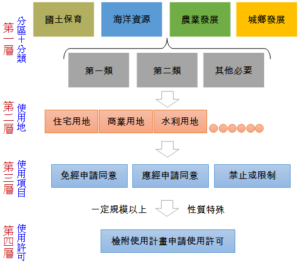

主題精選：國土計畫¶
共收錄 7 篇文章。
1. 國土計畫法與區域計畫法中在土地利用管制上之異同¶
發布日期: 2023-01-03
• (一) 相同處
-
兩者管制主要適用於都市計畫與國家公園範圍以外之地區。
-
兩者皆屬分區管制（容積率、建蔽率、高度管制）結合許可制。
-
兩者皆有分區劃設與使用地編定。
-
兩者皆有針對管制前得予從來使用，必要時強制拆遷之規範。
• (二) 相異處
-
分區劃設：前者為4大功能分區，分別為國土保育地區、海洋資源地區、城鄉發展地區與農業發展地區；後者則有一般農業區、特定農業區、鄉村區等11種分區。
-
分類劃設：前者在各功能分區下有再進一步分類，如第1類、第2類及其他必要分類；後者則無分類。
-
使用地編定： (1) 前者應依國土計畫國土功能分區分類編定適當的使用地，即計畫編定；而後者則囿於當時作業時間人力之限制，多採現況編定。 (2) 前者使用地仍待主管機關訂定；後者則編定有19種使用地。原則上兩者應有所不同。
-
使用項目訂定：前者應就各該功能分區及分類之土地使用原則訂定適當的使用項目，並配合編定使用地，故不同功能分區下之同一種使用地，其使用項目會有所差異；然而，區域計畫下非都市土地所編定之使用地，其容許使用項目及許可使用細目並未配合分區差異而有所不同，無法凸顯各該分區下使用地之特性及條件差異。
5. 許可制： (1)目的不同：前者於符合國土功能分區及其分類之使用原則下，從事一定規模以上或性質特殊之土地使用，應由申請人檢具規定之書圖文件申請使用許可，惟使用許可不得變更國土功能分區、分類；後者則為開發利用，依各該區域計畫之規定，由申請人擬具開發計畫，檢同有關文件，向直轄市、縣（市）政府申請，報經各該區域計畫擬定機關許可後，辦理分區變更。 (2)負擔不同：使用許可應繳納國土保育費及影響費；開發許可則應繳納開發影響費。 (3)審議條件不同：前者除土地使用適宜性、交通與公共設施服務水準、自然環境及人為設施容受力之一致性審議條件外，尚有針對各功能分區特性之特定條件；後者則僅有一致性之審議條件。 (4)審議機關不同：前者針對功能分區劃分中央與縣市主管機關之權限；後者則主要由中央主管機關審議，並依規模得委辦縣市政府審議。¶
注：本文圖片存放於 ./images/ 目錄下
2. 國土計畫使用許可之審議機關與條件¶
發布日期: 2022-11-22
國土計畫強調計畫指導功能，例如，國土計畫審議機關即依照國土功能分區劃分審議權責；審議條件除所有案件皆須考量之條件外，亦針對各功能分區給予特定條件：
- 審議機關(國土§24)
• (1) 申請使用許可範圍屬國土保育地區或海洋資源地區者，由直轄市、縣（市）主管機關核轉中央主管機關審議。
• (2) 其餘申請使用許可範圍由直轄市、縣（市）主管機關審議。
• (3) 但申請使用範圍跨二個直轄市、縣（市）行政區以上、興辦前條第五項國防、重大之公共設施或公用事業計畫跨二個國土功能分區以上致審議之主管機關不同或填海造地案件者，由中央主管機關審議。
| 審議機關 | 審議權責劃分 |
|---|---|
| 審議機關 | 審議權責劃分 |
| 中央主管機關 | 申請使用範圍屬國土保育地區 申請使用範圍屬海洋資源 地區 申請使用範圍跨二個直轄市、 縣（市）行政區以上 興辦國防、 重大之公共設施或公用事業計畫跨二個國土功能分區以上 致審議之主管機關不同 填海造地案件 |
| 直轄市、縣(市)主管機關 | 申請使用範圍屬農業發展地區 申請使用範圍屬城鄉發展 地區 |
- 許可使用之條件
主管機關審議申請使用許可案件，應考量土地使用適宜性、交通與公共設施服務水準、自然環境及人為設施容受力。依各國土功能分區之特性，經審議符合下列條件者，得許可使用：
• (1) 國土保育地區及海洋資源地區：就環境保護、自然保育及災害防止，為妥適之規劃，並針對該使用所造成生態環境損失，採取彌補或復育之有效措施。
• (2) 農業發展地區：維護農業生產環境及水資源供應之完整性，避免零星使用或影響其他農業生產環境之使用；其有興建必要之農業相關設施，應以與當地農業生產經營有關者為限。
• (3) 城鄉發展地區：都市成長管理、發展趨勢之關聯影響、公共建設計畫時程、水資源供應及電力、瓦斯、電信等維生系統完備性。
注：本文圖片存放於 ./images/ 目錄下
3. 國土計畫法第32條第2項之檢討¶
發布日期: 2022-10-27
國土計畫法第32條第2項規定：「直轄市、縣（市）主管機關對於既有合法可建築用地經依直轄市、縣（市）國土計畫變更為非可建築用地時，其所受之損失，應予適當補償。」此為進步立法，惟缺憾的是對於既有較高土地使用密度建築用地經依直轄市、縣（市）國土計畫變更為較低土地使用密度建築用地（如較高建蔽率與容積率變更為較低建蔽率與容積率），其所受之損失，未明定應給予適當補償。筆者認為應給予補償之理由是，土地使用分區及編定管制，透過土地使用類別與土地使用強度，確定私有土地價值。私人並以此土地價值進行交易。今，因直轄市、縣（市）國土計畫降低土地使用強度，私人財產權價值因而減少。究其性質，屬國家依法行使公權力，致人民財產權遭受逾其社會責任所應忍受範圍之損失，而形成個人之特別犠牲，國家應給予適當補償。¶
注：本文圖片存放於 ./images/ 目錄下
4. 國土計畫特定區域之性質與內容¶
發布日期: 2022-05-24
法規可能已修正
本文發布（2022-05-24）後，文中引用的 國土計畫法第8條（2025-01-20 修正）有修正，內容可能與現行規定不同，請以全國法規資料庫的現行條文為準。
國土計畫法第八條規定，針對原住民族土地、河川流域或是都會等特定地區，得另擬定特定區域之計畫內容。請詳述理由分析此處所謂特定區域之計畫內容係指全國國土計畫、直轄市、縣市國土計畫還是獨立之國土計畫類型？此外，此種特定區域之計畫內容得否針對計畫空間範圍內土地為國土4大分區、分類與使用地類別之編定？（110年政大研究所土地法與土地政策第一題）
擬答
首先，特定區域指具有特殊自然、經濟、文化或其他性質，經中央主管機關指定之範圍（國土法§3⑤）。特定區域應考量重要自然地形、地貌、地物、文化特色及其他法令所定之條件，實施整體規劃（國土法§6⑧），以整合相關目的事業計畫及其資源，於生態永續、資源共享、尊重多元文化活動需求、提升公共設施服務水準等原則，研擬治理及經營管理規劃，確保城鄉發展機會公平（全國國土計畫p.19）。
• (一) 特定區域計畫為全國國土計畫之一部分，非獨立之國土計畫類型
按國土計畫法第8條規定，國土計畫之種類僅全國國土計畫與直轄市、縣（市）國土計畫兩類，以及依據下列規定，從而特定區域計畫屬全國國土計畫之一部分，並非獨立之國土計畫類型：
-
中央主管機關擬訂全國國土計畫時，得會商有關機關就都會區域或特定區域範圍研擬相關計畫內容；直轄市、縣（市）政府亦得就都會區域或特定區域範圍，共同研擬相關計畫內容，報中央主管機關審議後，納入全國國土計畫。（國土法§8 II）
-
全國國土計畫中涉有依規定擬訂之都會區域或特定區域範圍相關計畫內容，得另以附冊方式定之。（國土法§9 II）
-
全國國土計畫中特定區域之內容，如涉及原住民族土地及海域者，應依原住民族基本法第二十一條規定辦理，並由中央主管機關會同中央原住民族主管機關擬訂。（國土法§11 II）
• (二) 特定區域計畫不得針對計畫空間範圍內土地為國土4大分區、分類與使用地類別之編定
-
依據國土計畫法第9條，全國國土計畫之內容，應載明事項包含：「國土功能分區及其分類之劃設條件、劃設順序」。而「國土功能分區及其分類之劃設、調整」則屬直轄市、縣（市）國土計畫之內容（國土法§10）。因此，特定區域計畫屬全國國土計畫之一部，得就特定區域範圍，研擬國土功能分區與分類劃設條件、劃設順序，指導縣（市）政府辦理劃設國土功能分區及分類、使用地編定作業，而非直接予以劃設或編定。
-
特定區域計畫內容，應載明下列事項（國土施§5）： (1)特定區域範圍。 (2)現況分析及課題。 (3)發展目標及規劃構想。 (4)治理及經營管理規劃。 (5)土地利用管理原則。 (6)執行計畫。 (7)其他相關事項。
按其應載明事項中並未有分區及分類劃設內容，惟可針對特殊需求訂定「土地利用管理原則」，再配合研訂土地使用管制規定，納入國土計畫土地使用管制規則當中。¶
注：本文圖片存放於 ./images/ 目錄下
5. 回饋與補償（下）¶
發布日期: 2022-01-06
• (二) 補償：由高密度土地使用變更為低密度土地使用，政府有補償之義務。其理由如下：
-
財產權保障：土地使用分區管制透過土地使用種類及土地使用強度，授予私人財產權。因此，地主擁有土地既有發展權，至於未來發展權置於公共領域，屬於國家所有。土地使用由高密度變更為低密度，等同國家剝奪私人既有發展權，故政府應給予補償。
-
信賴保護：行政程序法第8條規定：「行政行為，應以誠實信用之方法為之，並應保護人民正當合理之信賴。」準此，政府施政應保障人民正當合理之信賴。今，透過分區管制，土地價值因而確定，買賣雙方據以交易土地。此皆由於人民信賴分區管制制度所形成，故政府變更分區管制內容，造成地主權益受損，應給予補償。
-
特別犠牲：國家機關依法行使公權力致人民之財產遭受損失，若逾其社會責任所應忍受之範圍，形成個人之特別犧牲者，國家應予合理補償（司法院釋字第440號解釋）。都市計畫變更，如由高密度土地使用變更為低密度土地使用，就土地遭受變更之地主而言，屬於特別犠牲，故國家應給予補償。
例如，國土計畫法第32條第2項規定：「直轄市、縣（市）主管機關對於既有合法可建築用地經依直轄市、縣（市）國土計畫變更為非可建築用地時，其所受之損失，應予適當補償。」即是一例。
• (三) 結論：
-
回饋與補償，於都市計畫土地（即都市土地）與都市計畫以外土地（即非都市土地）皆適用。換言之，回饋與補償，全國土地皆應比照辦理。
-
我國雖有計畫變更之回饋與補償規定，但其規定散布於各法律，未一致或未周延之處頗多，故宜整合在同一法典。
-
回饋額度與補償額度應確實、適當、合理，故宜委由不動產估價師評估。
4. 回饋收入用於補償支出，專款專用，以力求財務收支平衡。¶
注：本文圖片存放於 ./images/ 目錄下
6. 國土計畫法修法內容¶
發布日期: 2020-04-30
各位同學好
本週專欄提醒本次國土計畫法主要修正下列五條，其中最主要是第45條國土計畫及功能分區圖之公告實施期限延長，其餘大致多為文字調整。最具爭議的15條國土計畫適時檢討變更情形(增列經行政院核定之國家重大建設計畫)並未修正：
| 修正條文 | 理由 |
|---|---|
| 修正條文 | 理由 |
| 第22條 直轄市、縣（市）國土計畫公告實施後， 應由各該主管機關依各級國土計畫國土功能分區之劃設內 容，製作國土功能分區圖及編定適當使用地， 並實施管制。前項國土功能分區圖， 除為加強國土保育者，得隨時辦理外， 應於國土計畫所定之一定期限內完成， 並應報經中央主管機關核定後公告。 前二項國土功能分區圖與使用地繪製之辦理機關、 製定方法、比例尺、辦理、 檢討變更程序及公告等之作業辦法， 由中央主管機關定之。 |
國土計畫之土地使用管制方式， 係按土地資源條件劃設國土功能分區分類並引導編定為適 當使用地後，再據以訂定使用項目， 與現行區域計畫法架構下，以現況編定使用地， 並僅以使用地訂定容許使用項目之土地使用管制方式不同 。再者，因申請人得向直轄市、 縣(市)主管機關申請同意使用後，配合變更使用地， 故使用地編定類別除不具穩定性， 與國土功能分區分類原則不得變更之情形有別，因此， 後續變更編定宜由直轄市、 縣（市）主管機關本權責辦理，是以， 使用地編定程序尚無須經內政部核定。 考量使用地編定涉及人民權利義務， 仍應訂定明確辦理程序，包含公告周知等， 爰修正第三項規定，將使用地繪製之相關辦理事項， 納入本項授權之繪製作業辦法內規範。 |
| 第35條 下列地區得由目的事業主管機關劃定為國土復 育促進地區，進行復育工作： 一、土石流高潛勢地區。 二、嚴重山崩、地滑地區。 三、嚴重地層下陷地區。 四、流域有生態環境劣化或安全之虞地區。 五、 生態環境已嚴重破壞退化地區。 六、 其他地質敏感或對國土保育有嚴重影響之地區。 前項國土復育促進地區之劃定、公告及廢止之辦法， 由中央主管機關會商相關目的事業主管機關定之。 國土復育促進地區之劃定機關， 由中央主管機關協調有關機關決定，協調不成， 報行政院決定之。 |
第二項授權訂定之辦法， 旨在規範國土復育促進地區劃定、公告、 廢止之程序及劃定機關協調機制，涉及中央、 地方主管機關與目的事業主管機關權責分工及協調， 立法原意係授權由中央主管機關訂定該辦法， 配合中央主管機關公告實施之全國國土計畫國土復育促進 地區相關內容， 以實質指導目的事業主管機關依環境復育需求劃定國土復 育促進地區，爰修正第二項文字以符立法原意。 |
| 第36條 有前條第一項、 第二項或第三項情形致釀成災害者， 處七年以下有期徒刑，得併科新臺幣五百萬元以下罰金； 因而致人於死者，處五年以上十二年以下有期徒刑， 得併科新臺幣一千萬元以下罰金；致重傷者， 處三年以上十年以下有期徒刑， 得併科新臺幣七百萬元以下罰金。 犯前項之罪者， 其墾殖物、工作物、施工材料及所使用之機具， 不問屬於犯罪行為人與否，沒收之。 |
經內政部檢討考量政府對違反國土計畫土地使用管制之國 土破壞行為應予有效嚇阻，且第一項因違規釀災、 致死或致重傷而造成不可逆之損害等係屬情節重大， 為減少違規行為人僥倖心理， 避免因相關物品無法沒收致犯罪成本降低而無法達到嚇阻 之目的， 仍有必要規定較刑法第三十八條第二項本文規定更大之沒 收範圍，爰維持第二項沒收範圍， 並配合刑法第三十八條第一項用詞，酌作文字修正， 以為刑法第三十八條第二項但書之特別規定。 |
| 第45條 中央主管機關應於本法施行後二年內， 公告實施全國國土計畫。 直轄市、 縣（市）主管機關應於全國國土計畫公告實施後三年內， 依中央主管機關指定之日期，一併公告實施直轄市、 縣（市）國土計畫；並於直轄市、 縣（市）國土計畫公告實施後四年內， 依中央主管機關指定之日期，一併公告國土功能分區圖。 直轄市、 縣（市）主管機關依前項公告國土功能分區圖之日起， 區域計畫法不再適用。 |
直轄市、縣（市）國土計畫係屬實質空間發展計畫， 涉及中央目的事業主管機關政策方向，需時協商確認， 且國土功能分區之劃設影響土地使用實質管制界線及管制 內容，攸關人民財產權益，須給予直轄市、 縣(市)主管機關充分調查及合理規劃期程， 俾內容更為完善，爰修正第二項直轄市、 縣（市）國土計畫及直轄市、 縣（市）國土功能分區圖之公告期程。 |
| 第47條 本法施行日期， 由行政院於本法公布後一年內定之。 本法修正條文自公布日施行。 |
因應本法後續修正及實務執行需求， 增訂第二項規定修正條 文自公布日施行。 |
注：本文圖片存放於 ./images/ 目錄下
7. 國土計畫土地使用管制架構¶
發布日期: 2014-12-14
各位同學好
地方特考剛考完，各位考生們辛苦了，也先預祝各位金榜題名！
今日專欄則針對國土計畫未來將於111年5月1日公告施行，正式取代區域計畫。因而國土計畫將是未來考試的趨勢，雖然許多子法仍在研訂當中，但基本上國土計畫的整體架構是必須先搞清楚的（例如今年經紀人考的是區域計畫的非都市土地使用管制架構）。國土計畫的土地使用管制架構主要分為四層管制，茲幫各位繪製架構圖如下，供各位理解：
[圖片1]
文章圖片¶
